Overview
Introduction
Sometimes raw data files contain data for several observations in one record. Data is stored in this manner to reduce the size of the entire data file.
Each record can contain
-
repeating blocks of data that represent separate observations

-
an ID field followed by an equal number of repeating fields that represent separate
observations
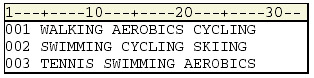 -
an ID field followed by a varying number of repeating fields that represent separate
observations
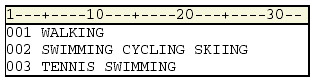
This chapter shows you several ways of creating multiple observations from a single record.
Objectives
In this chapter, you learn to
- create multiple observations from a single record that contains repeating blocks of data
- create multiple observations from a single record that contains one ID field followed by the same number of repeating fields
- create multiple observations from a single record that contains one ID field followed by a varying number of repeating fields
Additionally, you learn to
- hold the current record across iterations of the DATA step
- hold the current record for the next INPUT statement
- execute SAS statements based on a variable’s value
- explicitly write an observation to a data set
- execute SAS statements while a condition is true
Reading Repeating Blocks of Data
Each record in the file Tempdata contains three blocks of data. Each block contains a date followed by the day’s high temperature in a small city that is located in the southern United States.
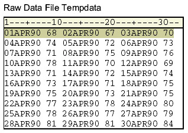You could write a DATA step that reads each record and creates three different Date and Temp variables.
SAS Data Set| Date1 | Temp1 | Date2 | Temp2 | Date3 | Temp3 |
|---|---|---|---|---|---|
| 11048 | 68 | 11049 | 67 | 11050 | 70 |
But if you create a separate observation for each block of data in a record, you can later use several statistical procedures to analyze the data for each day.
SAS Dataset| Date | HighTemp |
|---|---|
| 11048 | 68 |
| 11049 | 67 |
| 11050 | 70 |
Holding the Current Record with a Line-Hold Specifier
As you begin to write the INPUT statement, you need to hold the current record until each block of data has been read and written to the data set as an observation. This is easily accomplished by using a line-hold specifier in the INPUT statement.
SAS provides two line-hold specifiers
- The trailing at sign (@) holds the input record for the execution of the next INPUT statement
- The double trailing at sign (@@) holds the input record for the execution of the next INPUT statement, even across iterations of the DATA step
The term trailing indicates that the @ or @@ must be the last item that is specified in the INPUT statement. Here is an example:
input Name $20. @; or input Name $20. @@;This chapter teaches you how the trailing @@ can be used to hold a record across multiple iterations of the DATA step.
Using the Double Trailing At Sign (@) to Hold the Current Record
Typically, each time a DATA step executes, the INPUT statement reads a new record. But when you use the trailing @@, the INPUT statement holds the current record and reads the next value.
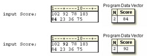The double trailing at sign (@@)
- works like the trailing @ except it also holds the data line in the input buffer across multiple executions of the DATA step
- typically is used to read multiple SAS observations from a single data line
- should not be used with the @ pointer control, with column input, nor with the MISSOVER option
A record that is being held by the double trailing at sign (@@) is not released until one of the following events occurs:
- the input pointer moves past the end of the record. Then the input pointer moves down to
the next record
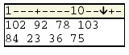 - an INPUT statement that has no line-hold specifier executes
- input ID $ @@;
- .
- .
- input Department 5.;
This example requires only one INPUT statement to read the values for Date and HighTemp, but
the INPUT statement must execute three times for each record.
The INPUT statement reads a block of values for Date and HighTemp, and then holds the
current record by using the trailing @@. The values in the program data vector are written to the
data set as an observation, and control returns to the top of the DATA step.
data perm.april90;
infile tempdata;
input Date : date. HighTemp @@;
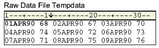
In the next iteration, the INPUT statement reads the next block of values for Date and HighTemp from the same record.
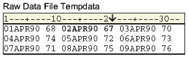Completing the DATA Step
You can add a FORMAT statement to the DATA step to display the date or time values with a format that you specify in the data set. In the FORMAT statement below, the DATEw. format is used to display the values for Date in the form ddmmmyyyy.
data perm.april90;
infile tempdata;
input Date : date. HighTemp @@;
format date date9.;
run;
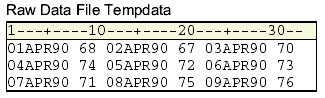
DATA Step Processing of Repeating Blocks of Data
Here is the complete DATA step.
data perm.april90;
infile tempdata;
input Date : date. HighTemp @@;
format date date9.;
run;
Example
As the execution phase begins, the input pointer rests on column 1 of record 1.
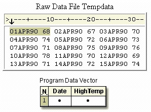During the first iteration of the DATA step, the first block of values for Date and HighTemp are read and stored in the program data vector.
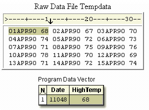The first observation is written to the data set, control returns to the top of the DATA step, and values are reset to missing.
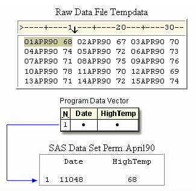During the second iteration, the @@ prevents the input pointer from moving down to column 1 of the next record.
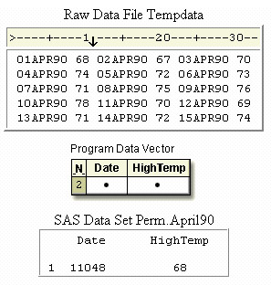The INPUT statement reads the second block of values for Date and HighTemp in the first record.
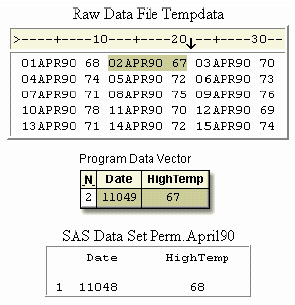The second observation is written to the data set, and control returns to the top of the DATA step.
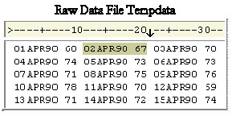 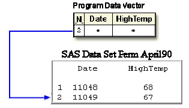During the third iteration, the last block of values is read and written to the data set as the third observation. Control returns to the top of the DATA step, and values are reset to missing.
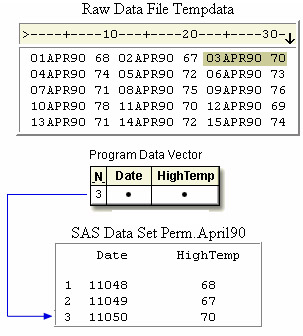During the fourth iteration, the first block of values in the second record is read and written as the fourth observation. Control returns to the top of the DATA step, and values are reset to missing.
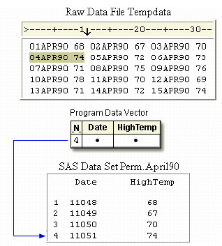The execution phase continues until the last block of data is read.
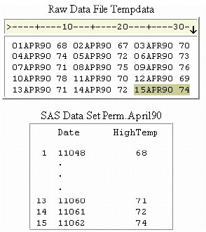You can display the data set with the PRINT procedure.
proc print data=perm.april90; run;
| Obs | Date | HighTemp |
|---|---|---|
| 1 | 01APR1990 | 68 |
| 2 | 02APR1990 | 67 |
| 3 | 03APR1990 | 70 |
| 4 | 04APR1990 | 74 |
| 5 | 05APR1990 | 72 |
| 6 | 06APR1990 | 73 |
| 7 | 07APR1990 | 71 |
| 8 | 08APR1990 | 75 |
| 9 | 09APR1990 | 76 |
| 10 | 10APR1990 | 78 |
| 11 | 11APR1990 | 70 |
| 12 | 12APR1990 | 69 |
| 13 | 13APR1990 | 71 |
| 14 | 14APR1990 | 71 |
| 15 | 15APR1990 | 74 |
Reading the Same Number of Repeating Fields
So far you have created multiple observations from a single record by executing the DATA step
once for each block of data in a record.
Now look at another file that is organized differently.
Each record in the file Data97 contains a sales representative's ID number, followed by four
repeating fields that represent his or her quarterly sales totals for 1997.
You want to pair each sales representative's ID number with one quarterly sales total to produce
a single observation. That way, four observations can be derived from one record.
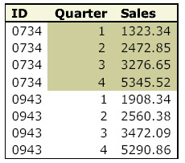
To accomplish this, you must execute the DATA step once for each record, repetitively reading and writing values in one iteration.
This means that a DATA step must
- read the value for ID and hold the current record
- create a new variable named Quarter to identify the fiscal quarter for each sales figure
- read a new value for Sales and write the values to the data set as an observation
- continue reading a new value for Sales and writing values to the data set three more times
Using the Single Trailing At Sign (@) to Hold the Current Record
First, you need to read the value for ID and hold the record so that subsequent values for Sales can be read.
data perm.sales97;
infile data97;
input ID $
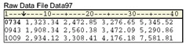
You are already familiar with the double trailing @@, which holds the current record across multiple iterations of the DATA step.
However, in this case, you want to hold the record with the trailing @ line-hold specifier so that a second INPUT statement can read the values for Sales within the same iteration of the DATA step. Like the double trailing @@, the single trailing @
- enables the next INPUT statement to read from the same record
- releases the current record when a subsequent INPUT statement executes without a linehold specifier
It's easy to distinguish between the trailing @@ and the trailing @ by remembering that
- easy to distinguish between the trailing @@ and the trailing @ by remembering that the double trailing at sign (@@) holds a record across multiple iterations of the DATA step until the end of the record is reached
- the single trailing at sign (@) releases a record when control returns to the top of the DATA step
In this example, the first INPUT statement reads the value for ID and uses the trailing @ to hold the current record for the next INPUT statement in the DATA step.
data perm.sales97;
infile data97;
input ID $ @;
input Sales : comma. @;
output;
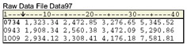
The second INPUT statement reads a value for Sales and holds the record. The COMMAw.d informat in the INPUT statement reads the numeric value for Sales and removes the embedded commas. An OUTPUT statement writes the observation to the SAS data set, and the DATA step continues processing.
| Note | Notice that the COMMAw.d informat does not specify a w value. Remember that list input reads values until the next blank is detected. The default length of numeric variables is 8 bytes, so you don’t need to specify a w value to determine the length of a numeric variable. |
|---|
When all of the repeating fields have been read and sent to output, control returns to the top of the DATA step, and the record is released.
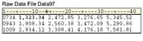
data perm.sales97;
infile data97;
input ID $ @;
input Sales : comma. @;
output;
input Sales : comma. @;
output;
input Sales : comma. @;
output;
input Sales : comma. @;
output;
run;
More Efficient Programming
Each record contains four different values for the variable Sales, so the INPUT statement must execute four times. Rather than writing four INPUT statements, you can execute one INPUT statement repeatedly in an iterative DO loop.
Each time the loop executes, you need to write the values for ID, Quarter, and Sales as an observation to the data set. This is easily accomplished by using the OUTPUT statement.
data perm.sales97;
infile data97;
input ID $ @;
do Quarter=1 to 4;
input Sales : comma. @;
output;
end;
run;
By default, every DATA step contains an implicit OUTPUT statement at the end of the step. Placing an explicit OUTPUT statement in a DATA step overrides the automatic output, and SAS adds an observation to a data set only when the explicit OUTPUT statement is executed.
Processing a DATA Step That Contains an Iterative DO Loop
Now that the program is complete, let’s see how SAS processes a DATA step that contains an iterative DO loop.
data perm.sales97;
infile data97;
input ID $ @;
do Quarter=1 to 4;
input Sales : comma. @;
output;
end;
run;
During the first iteration, the value for ID is read and Quarter is initialized to 1, so the loop begins to execute.
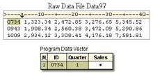The INPUT statement reads the first repeating field and assigns the value to Sales in the program data vector. The @ holds the current record.
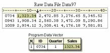The OUTPUT statement writes the values in the program data vector to the data set as the first observation.
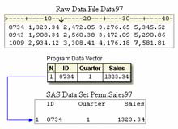The END statement indicates the bottom of the loop, but control returns to the DO statement, not to the top of the DATA step. Now the value of Quarter is incremented to 2.
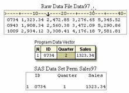The INPUT statement executes again, reading the second repeating field and storing the value for Sales in the program data vector.
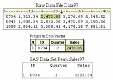The OUTPUT statement writes the values in the program data vector as the second observation.
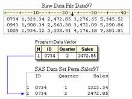The loop continues executing while the value for Quarter is 3, then 4. In the process, the third and fourth observations are created.
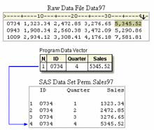After the fourth observation is created, Quarter is incremented to 5 at the bottom of the DO loop and control returns to the top of the loop. The loop does not execute again because the value of Quarter is now greater than 4.
The RUN statement executes. Control returns to the top of the DATA step, and the input pointer moves to column 1 of the next record. The variable values in the program data vector are reset to missing. Notice that SAS is reading the second record from the original file but has created four observations in the new SAS data set.
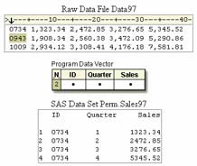When the execution phase is complete, you can display the data set with the PRINT procedure.
proc print data=perm.sales97; run;
| Obs | ID | Quarter | Sales |
|---|---|---|---|
| 1 | 0734 | 1 | 1323.34 |
| 2 | 0734 | 2 | 2472.85 |
| 3 | 0734 | 3 | 3276.65 |
| 4 | 0734 | 4 | 5345.52 |
| 5 | 0943 | 1 | 1908.34 |
| 6 | 0943 | 2 | 2560.38 |
| 7 | 0943 | 3 | 3472.09 |
| 8 | 0943 | 4 | 5290.86 |
| 9 | 1009 | 1 | 2934.12 |
| 10 | 1009 | 2 | 3308.41 |
| 11 | 1009 | 3 | 4176.18 |
| 12 | 1009 | 4 | 75.81.81 |
Reading a Varying Number of Repeating Fields
So far each record in the file Data97 has contained the same number of repeating fields.
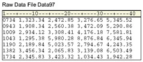But suppose some of the employees quit after the first quarter. Records that contain information for those employees might not contain sales totals for the second, third, or fourth quarter. These records contain a varying number of repeating fields.
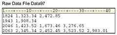The DATA step that you just wrote won’t work with a varying number of repeating fields because now the value of Quarter is not constant for every record.
data perm.sales97;
infile data97;
input ID $ @;
do Quarter=1 to 4;
input Sales : comma. @;
output;
end;
run;
Using the MISSOVER Option
You can adapt the DATA step to accommodate a varying number of values for Sales.
Like the previous example with the same number of repeating fields, your DATA step must read
the same record more than once. However, you need to prevent the input pointer from moving to
the next record when there are missing values for Sales.
You can use the MISSOVER option in an INFILE statement to prevent SAS from reading the next
record when missing values are encountered at the end of a record. Essentially, records that
have a varying number of repeating fields are records that contain missing values, so you need to
specify the MISSOVER option here as well.
Because there is at least one value for the repeating field, Sales, in each record, the first INPUT statement reads both the value for ID and the first value for Sales in the first record. The trailing @ holds the record so that any subsequent repeating fields can be read.
data perm.sales97;
infile data97 missover;
input ID $ Sales : comma. @;
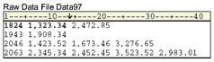
| Note |
SAS provides several options to control reading past the end of a line. You’ve
seen the MISSOVER option for setting remaining INPUT statement variables
to missing values if the pointer reaches the end of a record. You can also use
other options such as the TRUNCOVER option, which reads column or
formatted input when the last variable that is read by the INPUT statement
contains varying-length data. The TRUNCOVER option assigns the contents
of the input buffer to a variable when the field is shorter than expected.
Other related options include FLOWOVER (the default), STOPOVER, and SCANOVER. |
|---|
Executing SAS Statements While a Condition Is True
Now consider how many times to read each record. Earlier, you created an index variable named Quarter whose value ranged from 1 to 4 because there were four repeating fields. Now you want to read the record only while a value for Sales exists. Use a DO WHILE statement instead of the iterative DO statement, enclosing the expression in parentheses. In the example below, the DO WHILE statement executes while the value of Sales is not equal to a missing value (which is represented by a period).
data perm.sales97;
infile data97 missover;
input ID $ Sales : comma. @;
do while (sales ne .);
Creating a Counter Variable
Because the DO WHILE statement does not create an index variable, you can create your own
"counter" variable. You can then use a Sum statement to increment the value of the counter
variable each time the DO WHILE loop executes.
,br/>
In the example below, the assignment statement that precedes the loop creates the counter
variable Quarter and assigns it an initial value of zero. Each time the DO WHILE loop executes,
the Sum statement increments the value of Quarter by one.
data perm.sales97;
infile data97 missover;
input ID $ Sales : comma. @;
Quarter=0;
do while (sales ne .);
quarter+1;
Completing the DO WHILE Loop
Now look at the other statements that should be executed in the DO WHILE loop. First, you need an OUTPUT statement to write the current observation to the data set. Then, another INPUT statement reads the next value for Sales and holds the record. You complete the DO WHILE loop with an END statement.
data perm.sales97;
infile data97 missover;
input ID $ Sales : comma. @;
Quarter=0;
do while (sales ne .);
quarter+1;
output;
input sales : comma. @;
end;
run;
Processing a DATA Step That Has a Varying Number of Repeating Fields
Here is the new version of the DATA step.
data perm.sales97;
infile data97 missover;
input ID $ Sales : comma. @;
Quarter=0;
do while (sales ne .);
quarter+1;
output;
input sales : comma. @;
end;
run;
During the first iteration of the DATA step, values for ID and Sales are read. Quarter is initialized to zero.
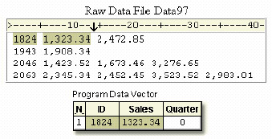The DO WHILE statement checks to see if Sales has a value at the top of the loop. Because it does have a value, the other statements in the DO loop execute.
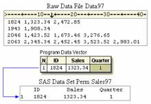The INPUT statement reads the next value for Sales, the end of the loop is reached, and control returns to the DO WHILE statement.
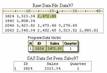The condition is checked at the top of the loop and Sales still has a value, so the loop executes again.
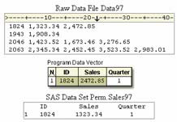Quarter is incremented to 2, and the values in the program data vector are written as the second observation.
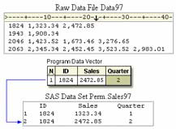The MISSOVER option prevents the input pointer from moving to the next record in search of another value for Sales. At this point, Sales has no value.
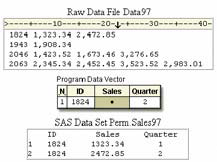Because the condition is now false, the statements in the loop are not executed.
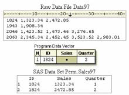Instead, control returns to the top of the DATA step, the values in the program data vector are reset to missing, and the input pointer moves to column 1 of the next record. The DATA step continues executing until all the values for Sales are read.
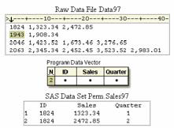PROC PRINT output for the data set shows a varying number of observations for each employee.
proc print data=perm.sales97; run;
| Obs | ID | Sales | Quarter |
|---|---|---|---|
| 1 | 1824 | 1323.34 | 1 |
| 2 | 1824 | 2472.85 | 2 |
| 3 | 1943 | 2199.23 | 1 |
| 4 | 2046 | 3598.48 | 1 |
| 5 | 2046 | 4697.98 | 2 |
| 6 | 2046 | 4598.45 | 3 |
| 7 | 2063 | 4963.87 | 1 |
| 8 | 2063 | 3434.42 | 2 |
| 9 | 2063 | 2241.64 | 3 |
| 10 | 2063 | 2759.11 | 4 |
Summary
Text Summary
File Formats
One raw data record can contain enough information to produce several observations. Data is stored in this manner in order to reduce the size of the entire file. The data can be organized into
- repeating blocks of data
- an ID field followed by the same number of repeating fields
- an ID field followed by a varying number of repeating fields
Reading Repeating Blocks of Data
To create multiple observations from a record that contains repeating blocks of data, the DATA step needs to hold the current record until each block of data has been read and written to the data set as an observation. The DATA step should include statements that
- read the first block of values and hold the current record with the double trailing at sign (@@) line-hold specifier
- optionally add a FORMAT statement to display date or time values with a specified format
- write the first block of values as an observation
- execute the DATA step until all repeating blocks have been read
Reading the Same Number of Repeating Fields
To create multiple observations from a record that contains an ID field and the same number of repeating fields, you must execute the DATA step once for each record, repetitively reading and writing values in one iteration. The DATA step should include statements that
- read the ID field and hold the current record with the single trailing at sign (@) line-hold specifier
-
execute SAS statements using an iterative DO loop. The iterative DO loop repetitively
processes statements that
- read the next value of the repeating field and hold the record with the @ linehold specifier
- explicitly write an observation to the data set by using an OUTPUT statement
- complete the iterative DO loop with an END statement
Reading a Varying Number of Repeating Fields
To create multiple observations from a record that contains an ID field and a varying number of repeating fields, you must execute the DATA step once for each record, repetitively reading and writing values in one iteration while the value of the repeating field exists. The DATA step should include statements that
- prevent SAS from reading the next record if missing values were encountered in the current record by using the MISSOVER option
- read the ID field and the first repeating field, and then hold the record with the single trailing at sign (@) line-hold specifier
- optionally create a counter variable
-
execute SAS statements while a condition is true, using a DO WHILE loop. A DO WHILE
loop repetitively processes statements that
- optionally increment the value of the counter variable by using a Sum statement
- explicitly add an observation to the data set by using an OUTPUT statement
- read the next value of the repeating field and hold the record with the single trailing at sign (@) line-hold specifier
- complete the DO WHILE loop with an END statement
Points to Remember
- The double trailing at sign (@@) holds a record across multiple iterations of the DATA step until the end of the record is reached
- The single trailing at sign (@) releases a record when control returns to the top of the DATA step
- Use an END statement to complete DO loops and DO WHILE loops